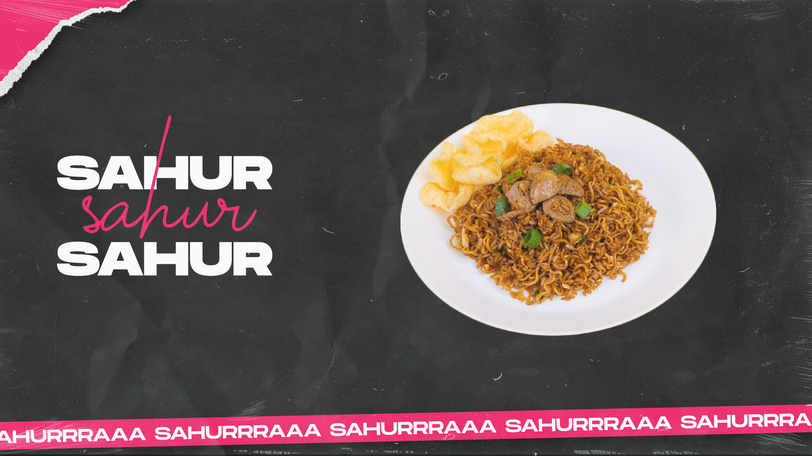
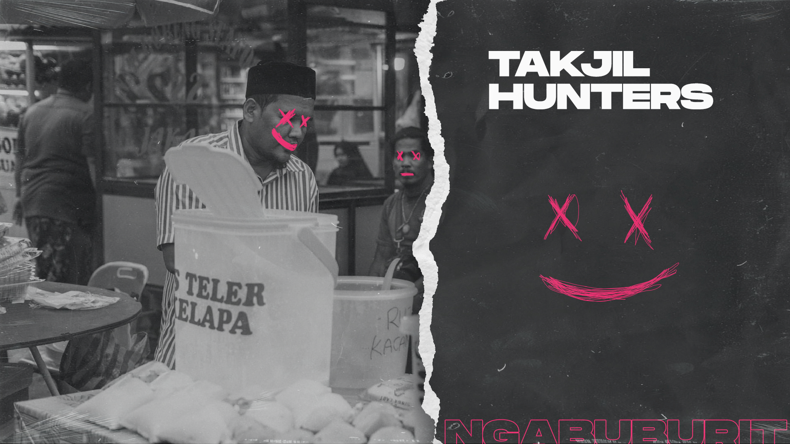
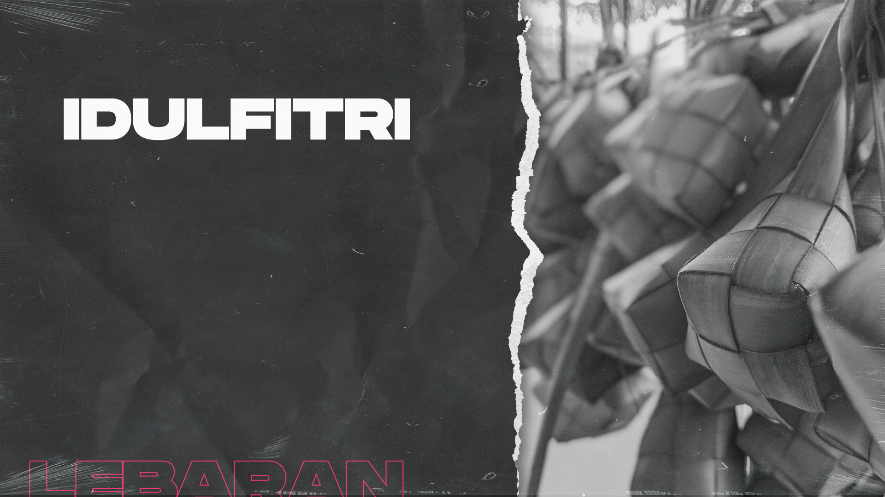

INFO - Bulan suci Ramadhan adalah bulan yang penuh
berkah, bulan yang penuh rahmat. Berlomba-lomba untuk mendapatkan
pahala sekaligus penghapus dosa dibulan suci ini adalah tugas kita
sebagai umat muslim untuk meluruskan dan mengkokohkan tiang agama.
Kegiatan-kegiatan spesial selama bulan Ramadhan juga mengisi setiap
hari demi hari sampai akhirnya kita tiba dihari yang sangat spesial,
yaitu Hari Raya Idulfitri.
Banyak hal dan juga kegiatan yang bisa kita lakukan dibulan
Ramadhan, terlebih lagi ada hal dan kegiatan yang hanya terjadi saat
bulan Ramadhan. Apa saja hal dan kegiatan tersebut? Itu semua akan
dibahas di sini!
Sholat Tarawih
Sholat Tarawih adalah Sholat yang dikerjakan setelah Sholat Isya
selama bulan suci Ramadhan berlangsung. Sholat Tarawih sendiri
merupakan ibadah yang hukumnya Sunnah Muakkad, Sholat Tarawih ini
dianjurkan untuk menyempurnakan ibadah/sholat wajib. Jumlah Rakaat
Sholat Tarawih bermacam-macam. Bisa 11 Rakaat (termasuk Sholat Witir
3 Rakaat), 23 Rakaat atau 39 Rakaat.
Diawal bulan Ramadhan umat muslim berbondong-bondong pergi ke Masjid
atau Mushola untuk melakukan Sholat Tarawih, tak ayal pada hari
pertama Masjid atau Mushola sangatlah ramai dipenuhi jamaah yang
siap untuk menunaikan ibadah tersebut.
Dengan adanya Sholat Tarawih, biasanya anak-anak kecil
memanfaatkannya untuk bermain petasan dan perang sarung, hal ini
tidak dibenarkan karena dapat mengganggu ketertiban dan kelancaran
Sholat Tarawih namun seolah-olah hal itu termasuk hal yang lumrah
dulunya dan itu adalah hal yang hanya terjadi pada bulan Ramadhan
saja, hal yang bisa dianggap sebagai keasikaanya tersendiri.
Sahur
Sahur adalah kegiatan atau aktivitas makan bagi umat Islam yang
dilakukan pada dini hari bagi yang akan menjalankan ibadah puasa
pada bulan puasa. Sebenarnya apa fungsi sahur? Fungsi sahur itu
sangat penting yaitu memberikan energi dan nutrisi yang cukup untuk
tubuh selama berpuasa. Selain itu, sahur juga dapat membantu menjaga
kadar gula darah dan mengurangi rasa lapar dan haus selama puasa.

Salah satu kegiatan selama bulan Ramadhan adalah membangunkan
orang-orang untuk sahur. Dari mulai Masjid atau Mushola yang
mengumumkannya dan warga yang berkeliling. Biasanya mereka yang
membangunkan sahur menggunakan tong kosong/bedug dan memukulinya
sangat keras supaya orang-orang dapat terbangun. Selain tong
kosong/bedug mereka juga menggunakan suara mereka untuk membangunkan
orang juga.
Berburu Takjil 'TAKJIL HUNTERS'
Moment yang paling ditunggu-tunggu saat bulan puasa adalah menjadi
anggota TAKJIL HUNTERS alias berburu takjil. Menjelang waktu berbuka
atau sore hari, penjual takjil berjejer disepanjang jalan dengan
aneka makanan, kue, dan es yang mereka sajikan di meja mereka,
sangat bervariatif dan beraneka ragam. Di moment ini juga harus
pasang iman yang kuat, jangan sampai tergoda apalagi sampai lapar
mata, nyesel nantinya kalau sudah berbuka, secukupnya aja.

Berburu takjil sangat digemari berbagai kalangan dari yang muda
sampai yang tua bahkan agama lain ikut serta dalam memeriahkan
berburu takjil ini, dikarenakan berburu takjil adalah hal yang
paling dinanti di bulan Ramadhan, mata kita disuguhkan dengan aneka
ragam makanan dan jajanan. Suasana sore hari sembari berburu
santapan 'tuk berbuka, hal yang hanya bisa dirasakan di bulan
Ramadhan.
Hari Raya Idulfitri
Hari Raya Idulfitri atau yang biasa disebut Lebaran adalah hari raya
umat Islam yang jatuh pada tanggal 1 Syawal pada penanggalan
Hijriah. Karena penentuan 1 Syawal yang berdasarkan peredaran bulan
tersebut, maka Idulfitri atau Hari Raya Puasa jatuh pada tanggal
yang berbeda-beda setiap tahunnya apabila dilihat dari penanggalan
Masehi. Cara menentukan 1 Syawal juga bervariasi sehingga boleh jadi
ada sebagian umat Islam yang merayakannya pada tanggal Masehi yang
berbeda.

Bagi umat islam, idulfitri adalah hal yang paling ditunggu-tunggu,
pasalnya itu adalah moment setelah sholat idulfitri untuk berkumpul
kembali bersama keluarga, apalagi keluarga yang karena suatu alasan,
misalnya pekerjaan atau pernikahan, harus berpisah. Sholat idulfitri
dilakukan pada awal pagi hari dan bertempat di Masjid bahkan tanah
lapang. Idulfitri adalah moment bermaaf-maafan sesama keluarga,
saudara, kerabat, maupun tetangga. Satu lagi moment yang ditunggu
sehabis sholat idulfitri adalah berbagi THR (Tunjangan Hari Raya)
yang biasanya dibagikan untuk anak-anak.
Kira-kira hal atau kegiatan apalagi yang hanya terjadi dibulan
Ramadhan? Pikirkan itu sendiri. Dan akhirnya kalian sudah mencapai
akhir dari artikel ini, terimakasih telah membaca, wahai orang-orang
beriman.